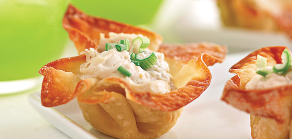

<html></html>
<head>
    <title>recipe</title>
    <meta name="viewport" content="width=device-width, initial-scale=1">
    <link rel="stylesheet" href="recipesty.css">
    <link rel="stylesheet" href="https://fonts.googleapis.com/css?family=Zain|ABeeZee|Inter">
</head>
<body>
    <div class="header">
        <h1>Flavor Fusion</h1>
    </div>
    <div class="navbar">
        <ul>
            <li><a href="frontpage.html">Home</a></li>
            <li><a href="category1.html">Appetizers</a></li>
            <li><a href="category2.html">Main Courses</a></li>
            <li><a href="category3.html">Desserts</a></li>
        </ul>
    </div>
    <div class="name">
        <p style="font-size: 250%;">Crab Rangoon Wonton Cups</p>
    </div>

    <div class="scrolling-gallery">
        
        
        
        
    </div>

    <div class="desc">
        <div class="descinfo">
            <p>
                Crab rangoon is one of my favorite appetizers to order when I go to a Chinese restaurant, so I decided to make an inspired version at home. In addition to more crabmeat, I've also added white Cheddar and roasted red peppers. These are so good — I bet you can't eat just one!
            </p>
        </div>

        <div class="time">
            
            <br> Total Time: 50 min
        </div>

        <div class="flip-card">
            <div class="flip-card-inner">
              <div class="flip-card-front">
                
                <br>
                Nutritional information
              </div>
              <div class="flip-card-back">
                <p>
                    serving size: 1 of 24<br>
                    calories: 150<br>
                    total fat: 4g<br>
                    carbs: 20g<br>
                    sugar: 1g<br>
                    protein: 7g<br>
                    cholesterol: 22mg<br>
                    sodium: 307mg<br>
                </p>
              </div>
            </div>
          </div>
        
    </div>

    <div class="bottom">
        <div class="ingredients">
            <h2 style="text-align: center;">Ingredients</h2>
            <hr class="divider" style="width: 70%">
            <div class="checkbox">
                <form>

                    <p>
                        <input type="checkbox" name="ingredients" class="strikethrough">
                        <label>Nonstick cooking spray, for the muffin tin<br></label>
                    </p>

		            <p>
                        <input type="checkbox" name="ingredients" class="strikethrough">
                        <label>24 wonton wrappers<br></label>
                    </p>

		            <p>
                        <input type="checkbox" name="ingredients" class="strikethrough">
                        <label>One 8-ounce block low-fat cream cheese, at room temperature<br></label>
                    </p>

		            <p>
                        <input type="checkbox" name="ingredients" class="strikethrough">
                        <label>4 ounces sharp white Cheddar, shredded<br></label>
                    </p>

		            <p>
                        <input type="checkbox" name="ingredients" class="strikethrough">
                        <label>4 green onions, sliced (white and green parts separated)<br></label>
                    </p>

		            <p>
                        <input type="checkbox" name="ingredients" class="strikethrough">
                        <label>1 tablespoon drained chopped roasted red peppers<br></label>
                    </p>

		            <p>
                        <input type="checkbox" name="ingredients" class="strikethrough">
                        <label>1 tablespoon Worcestershire sauce<br></label>
                    </p>

		            <p>
                        <input type="checkbox" name="ingredients" class="strikethrough">
                        <label>2 teaspoons seafood seasoning, such as Old Bays<br></label>
                    </p>

		            <p>
                        <input type="checkbox" name="ingredients" class="strikethrough">
                        <label>1 teaspoon garlic powder<br></label>
                    </p>

		            <p>
                        <input type="checkbox" name="ingredients" class="strikethrough">
                        <label>1 teaspoon onion powder<br></label>
                    </p>

		            <p>
                        <input type="checkbox" name="ingredients" class="strikethrough">
                        <label>1 teaspoon kosher salt<br></label>
                    </p>

		            <p>
                        <input type="checkbox" name="ingredients" class="strikethrough">
                        <label>1/2 teaspoon freshly ground pepper<br></label>
                    </p>

		            <p>
                        <input type="checkbox" name="ingredients" class="strikethrough">
                        <label>8 ounces lump crabmeat<br></label>
                    </p>

		            <p>
                        <input type="checkbox" name="ingredients" class="strikethrough">
                        <label>1/2 red bell pepper, minced<br></label>
                    </p>

                    
                </form>
             </div>
        </div>        

        <div class="instructions">
            <h2 style="text-align: center;">Instructions</h2>
            <hr class="divider">
            <div class="steps">
                <ol type="1">
                    <li>Preheat the oven to 350 degrees F. Coat a 24-count mini muffin tin with nonstick cooking spray.</li><br>
	                <li>Press one wonton wrapper into each well of the muffin tin. Coat the top of the wonton wrappers with cooking spray. Bake until golden brown, about 8 minutes.</li><br>
	                <li>Meanwhile, combine the cream cheese, Cheddar, the white part of the green onions, roasted red peppers, Worcestershire sauce, seafood seasoning, garlic powder, onion powder, salt and pepper in a bowl until fully incorporated. Gently fold in the crabmeat and set aside.</li><br>
	                <li>Spoon about 1 tablespoon filling into each of the wonton cups. Cover with aluminum foil and bake until the filling is warmed through and bubbly, about 20 minutes. Immediately remove the wontons from the muffin tin to a wire baking rack so the cups remain crispy. Garnish each wonton with the green parts of the green onions and the bell pepper. Serve hot.</li><br>
                </ol>
            </div>
        </div>
    </div>
</body>
</html>